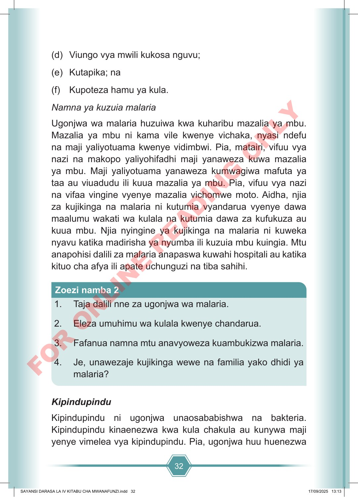

32 (d) Viungo vya mwili kukosa nguvu; (e) Kutapika; na (f) Kupoteza hamu ya kula. Namna ya kuzuia malaria Ugonjwa wa malaria huzuiwa kwa kuharibu mazalia ya mbu. Mazalia ya mbu ni kama vile kwenye vichaka, nyasi ndefu na maji yaliyotuama kwenye vidimbwi. Pia, matairi, vifuu vya nazi na makopo yaliyohifadhi maji yanaweza kuwa mazalia ya mbu. Maji yaliyotuama yanaweza kumwagiwa mafuta ya taa au viuadudu ili kuua mazalia ya mbu. Pia, vifuu vya nazi na vifaa vingine vyenye mazalia vichomwe moto. Aidha, njia za kujikinga na malaria ni kutumia vyandarua vyenye dawa maalumu wakati wa kulala na kutumia dawa za kufukuza au kuua mbu. Njia nyingine ya kujikinga na malaria ni kuweka nyavu katika madirisha ya nyumba ili kuzuia mbu kuingia. Mtu anapohisi dalili za malaria anapaswa kuwahi hospitali au katika kituo cha afya ili apate uchunguzi na tiba sahihi. 1. Taja dalili nne za ugonjwa wa malaria. 2. Eleza umuhimu wa kulala kwenye chandarua. 3. Fafanua namna mtu anavyoweza kuambukizwa malaria. 4. Je, unawezaje kujikinga wewe na familia yako dhidi ya malaria? Zoezi namba 2 Kipindupindu Kipindupindu ni ugonjwa unaosababishwa na bakteria. Kipindupindu kinaenezwa kwa kula chakula au kunywa maji yenye vimelea vya kipindupindu. Pia, ugonjwa huu huenezwa SAYANSI DARASA LA IV KITABU CHA MWANAFUNZI.indd 32 SAYANSI DARASA LA IV KITABU CHA MWANAFUNZI.indd 32 17/09/2025 13:13 17/09/2025 13:13 F O R O N L I N E R E A D I N G O N L Y